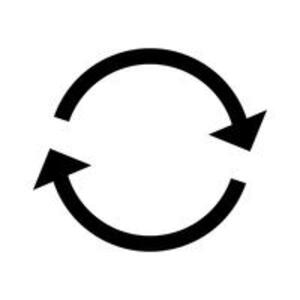
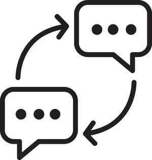

(verb)
intr: repeat, answer [αντιλεγειν, αποκρινεσθαι, απολογεισθαι]
tr: repeat, do again, add [δευτερουν, διπλασιαζειν]
tr: repeat, do again, add [δευτερουν, διπλασιαζειν]


1: repeat, 2: answer
complete++
| With following preposition:5015 | 509b | ||||||||
| ― ⲉ- SB | reply to
― intr: ― tr: do again, repeat S5016 |
||||||||
| ― ⲉϫⲛ- SB | reply to5017 | ||||||||
| ― ⲛ- (dat) SBF | 5018 | 510a | |||||||
| ― ⲛⲥⲁ- SB | respond to5019 | ||||||||
| ― ⲛⲁϩⲣⲛ- SB | in presence of5020 | ||||||||
| ― ⲟⲩⲃⲉ- SBF | contradict, adject [αντειπειν, αντιλεγειν]5021 | ||||||||
| ― ϩⲁ- SA | as last5022 | ||||||||
| ― ϩⲓ- S | as last5023 | ||||||||
| With following adverb:7032 | |||||||||
| c ⲉⲃⲟⲗ B | interpret7033 | ||||||||
| c ⲉϩⲣⲁⲓ S | bring up again, reconstruct7034 | ||||||||
| ― SALB | (noun masculine)answer, objection, interpretation [αντιλογια, αντιθεσις, συγκρισις]2726 | ||||||||
| ⲛⲟⲩ. SABF | adverbial, again [ετι, παλιν]2727 | 510b | |||||||
| ⲁⲧⲃⲱ. B | without response2728 | ||||||||
| ⲣⲉϥⲟⲩ. S | answerer, contradictor2729 | ||||||||
| ⲙⲛⲧⲣ. | opposition, disobedience2730 | ||||||||
| ϭⲓⲛⲟⲩ., ϫⲓⲛⲟⲩ. SB | opposition2731 | ||||||||
| ⲟⲩⲁϩⲙⲉϥ S | answerer, interpreter2732 | ||||||||
| ⲟⲩⲁϩⲙⲉ S
ⲟⲩⲁϩⲙⲓ, ⲃⲁϩⲙⲓ B |
what is added, storey of house2733 | ||||||||
See also:
| view | (ⲟⲩⲱϩ), ⲟⲩⲉϩ- S | (verb) tr: interpret [εξηγητης]1765 |
| view | ⲃⲱⲗ, ⲃⲉⲗ-, ⲃⲟⲗ⸗, (ⲃⲁⲗ⸗), ⲃⲏⲗ† SALBFO p c ⲃⲁⲗ- SALBFO | (verb) loosen, untie, mostly tr [λυειν]
melt unstring interpret, explain scriptures, dreams &c [διερμηνευειν] be softened, persuaded weaken, make faint nullify order, deed dissolve, destroy pay54 |
| view | ϩⲏ, ϩⲉ S ϧⲉ B | (noun feminine) storey of house [υπερωον]2104 |